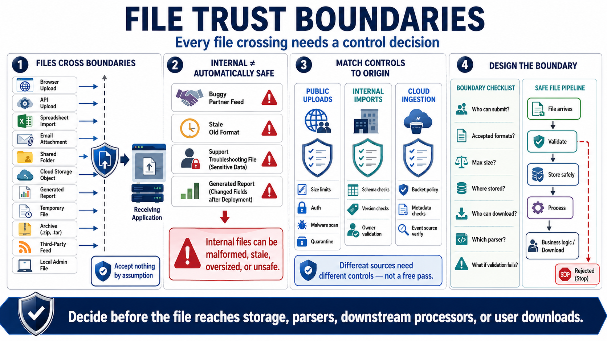

File Input Trust Boundaries
Connecting to LMS... Progress: in progress

Narration
A trust boundary appears whenever a file moves from one context into another. Browser uploads and API uploads are obvious examples, but they are not the only ones. Imported spreadsheets, email attachments, shared folder drops, cloud storage objects, generated reports, temporary files, archives, third-party file feeds, and local administrator files all cross boundaries. The receiving system should decide what it is willing to accept before acting on the file.
Internal files can still be malformed, stale, oversized, or unsafe. A partner feed may be generated by a buggy job. A shared folder may contain an old format. A support engineer may upload a troubleshooting file with sensitive data. A report generated by another service may include fields that changed after a deployment. Treating internal files as automatically trusted is how file-handling assumptions spread into production workflows.
The file's origin should influence the control set, but it should not eliminate controls entirely. Public uploads may need strict size limits, authentication, malware scanning, and quarantine. Internal imports may need schema checks, version checks, and ownership validation. Cloud object ingestion may need bucket policy review, object metadata validation, and event source verification. Different sources need different controls, not a free pass.
Good design names each file boundary and assigns responsibility. Who is allowed to submit the file. What formats are accepted. How large can it be. Where is it stored. Who can download it. Which parser handles it. What happens when validation fails. These questions should be answered before files reach business logic, storage, downstream processors, or user-facing download paths.